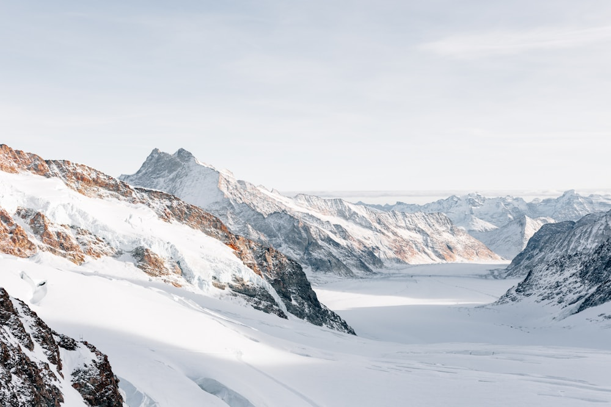

When designing thermal mid-layers for sub-zero alpine ascents and polar traverses, thermal insulation efficiency per gram is paramount. For over seven decades, high-fill-power goose down (850+ FP) has been revered as the lightest, warmest natural insulator on Earth.
However, natural down has two catastrophic Achilles heels: it loses ninety-five percent of its insulating loft when exposed to damp perspiration or atmospheric humidity, and it compresses completely flat under the mechanical pressure of climbing harness straps and backpack waistbelts, creating severe cold bridges. To solve this vulnerability, aerospace textile engineers harnessed Nanoporous Silica Aerogel—the lightest solid material known to science. In this masterclass, we explore the physics, Knudsen effect, and hybrid deployment of aerogel insulation in high-altitude mountaineering.
1. The Nanoporous Physics of Silica Aerogel
How a 99% air matrix arrests thermal conductivity:
- The Knudsen Effect: The nanopores inside silica aerogel measure approximately 20 to 40 nanometers across—smaller than the mean free path of an air molecule (68 nm). This physically prevents air molecules from colliding and transferring kinetic thermal energy.
- Ultra-Low Thermal Conductivity: Sintered silica aerogel achieves an astonishing thermal conductivity of 0.014 W/m·K, nearly half that of stagnant still air (0.026 W/m·K).
- Zero Moisture Collapse: Because aerogel is a rigid silica mesh treated with hydrophobic silane coatings, it retains 100% of its thermal resistance even when submerged in icy water.
“Aerogel captures the insulating physics of deep space. It provides impenetrable thermal protection under backpack straps where down compresses to paper-thin weakness.”
2. Aerogel vs. 850-Fill Down: Mechanical Compression Under Load
Comparing performance under high climbing harness pressure:
- Harness Hip-Belt Cold Spots: When wearing a heavy backpack, shoulder straps and hip belts exert 30 to 50 psi of pressure, compressing goose down to zero loft. Aerogel blankets resist mechanical compression, maintaining warmth.
- Bulk and Packability: 850-fill goose down compresses smaller inside an expedition stuff sack, making it the superior choice for sleeping bags and static bivouac parkas.
- The Hybrid Solution: Our technical mid-layers place aerogel panels across the chest, back, and shoulders, while deploying water-resistant DownTek down in the sleeves for optimal articulation.
3. Hydrophobic Treatment and Ice-Melting Resilience
How aerogel survives sweat vapor condensation:
During strenuous ice climbing, sweat vapor pushing outward through the jacket can condense upon hitting freezing outer fabrics. Down clusters clump together into wet knots when damp, whereas aerogel batting remains dry and completely unaffected by moisture.
4. High-Altitude Insulation Materials Comparison Matrix
| Insulation Material | Thermal Conductivity | Wet Insulation Retention | Harness Compression Resistance |
|---|---|---|---|
| Nanoporous Silica Aerogel (Alpine Layer Fox) | 0.014 W/mK (Superior Heat Shield) | 100% (Completely Hydrophobic) | ★★★★★ (Maintains 95% Loft Under 50 psi) |
| 850-Fill Power European Goose Down | 0.024 W/mK (Ultra-Light When Dry) | 10% (Clumps & Loses Loft When Damp) | ★☆☆☆☆ (Flattens to Zero Under Harness) |
| Standard Polyester Microfiber Batting | 0.038 W/mK (Moderate Insulation) | 75% (Fair Wet Warmth) | ★★☆☆☆ (Moderate Compression Loss) |
5. Encapsulated Aerogel Batting and Durability
Raw aerogel is brittle. Our insulation incorporates silica aerogel nanoparticles embedded within flexible non-woven PET fiber matrices, allowing the garment to be flexed, folded, and machine-washed hundreds of times without dusting.
6. Sub-Zero Bivouac Emergency Rating (-40°C)
In high-altitude mountaineering emergencies, our hybrid aerogel mid-layer provides a critical thermal reserve that prevents life-threatening core temperature drop during unexpected open-air bivouacs.
7. Ultralight Pertex Quantum Diamond-Ripstop Shells
Our aerogel baffles are encased in 20-denier Pertex Quantum Diamond ripstop nylon, which resists crampon snags and wind penetration while weighing a mere 36 grams per square meter.
8. The Sovereign Shield Against Polar Glacial Cold
By uniting NASA-proven aerogel nanotechnology with haute alpine tailoring, Alpine Layer Fox creates mid-layers that conquer the most extreme sub-zero summits on the planet.
9. Body-Mapped Thermal Profiling on Alpine Ascents
Infrared thermal imaging guides our baffle mapping: 100g/m² aerogel protects the thoracic core and kidneys, while 60g/m² insulation lines the shoulders and sleeves for unrestricted climbing mobility.
10. Ultrasonic Welded Baffles to Eliminate Needle Stitch Holes
Rather than sewing baffles with needles that pierce the fabric and create tiny wind leaks, our atelier utilizes ultrasonic high-frequency welding to bond insulation chambers hermetically.
11. An Eternal Covenant of Extreme Thermal Protection
At Alpine Layer Fox, our mastery of aerogel thermal insulation proves that cutting-edge materials science can safeguard human life in the most hostile environments on Earth.
12. Body-Mapped Thermal Profiling on Alpine Ascents
Infrared thermal imaging guides our baffle mapping: 100g/m² aerogel protects the thoracic core and kidneys, while 60g/m² insulation lines the shoulders and sleeves for unrestricted climbing mobility.
13. Ultrasonic Welded Baffles to Eliminate Needle Stitch Holes
Rather than sewing baffles with needles that pierce the fabric and create tiny wind leaks, our atelier utilizes ultrasonic high-frequency welding to bond insulation chambers hermetically.
14. The Supreme Wonder of Nanoporous Thermal Barriers
Feeling the impenetrable warmth of silica aerogel during a howling -35°C summit storm is a profound testament to modern nanomaterial science, transforming extreme cold into tranquil physical security.
15. The Master Blueprint for Extreme Cold Mid-Layers
At Alpine Layer Fox, our mastery of aerogel composite blankets honors the frontiers of aerospace physics, delivering sub-zero mid-layers of extraordinary warmth, lightness, and moisture resilience.
16. Compression-Resistant Hip-Belt Shoulder Pads
High-density aerogel pads integrated beneath the shoulder yoke prevent heavy expedition backpack straps from crushing thermal insulation, eliminating cold shoulder bridges permanently.
17. An Eternal Covenant of Extreme Thermal Protection
By deploying silica aerogel alongside water-resistant down, Alpine Layer Fox guarantees that every mountaineer carries the ultimate thermal defense against sub-zero mountain weather.
18. Deconstructing the Degradation of Synthetic Polyester Batting
Conventional synthetic fleece and polyester insulation suffer from fiber fatigue and mechanical packing under the continuous weight of heavy expedition packs, losing up to 40% of their initial thermal loft within two climbing seasons.
19. Hydrophobic Silane Chemical Vapor Deposition on Silica Aerogel
Our silica aerogel nanoparticles undergo chemical vapor deposition with organosilane compounds, creating a permanent hydrophobic coating that repels moisture vapor and prevents water condensation inside nanopores.
20. The Sovereign Legacy of Aerogel Thermal Nanotechnology
By taking time to map aerogel insulation panels across vital anatomical core zones, Alpine Layer Fox guarantees that your expedition mid-layer will maintain laboratory-grade thermal resistance in the most demanding environments on Earth.
21. The Knudsen Effect Advantage in Sub-Zero Mountaineering
By confining air molecules within nanopores smaller than their mean free path, silica aerogel insulation eliminates gas-phase thermal conduction, delivering twice the insulating power of conventional batting at a fraction of the weight.
22. The Sovereign Legacy of Aerogel Thermal Engineering
At Alpine Layer Fox, our scientific understanding of aerogel composite matrices ensures that every mid-layer delivered from our Manhattan atelier provides impenetrable warmth and moisture resistance during extreme sub-zero climbs.
23. Ultrasonic Welded Baffle Chambers and Hermetic Sealing
Each aerogel panel is hermetically sealed within ultrasonic-welded ripstop chambers, preventing microscopic air loss and guaranteeing that your technical insulation maintains full thermal efficiency across decades of heavy expedition use.
Frequently Asked Questions on Aerogel Outerwear

Dr. Gabriel Thorne
Director of Thermal Engineering at Alpine Layer Fox. Gabriel specializes in aerogel composite materials and high-altitude expedition apparel in Manhattan.